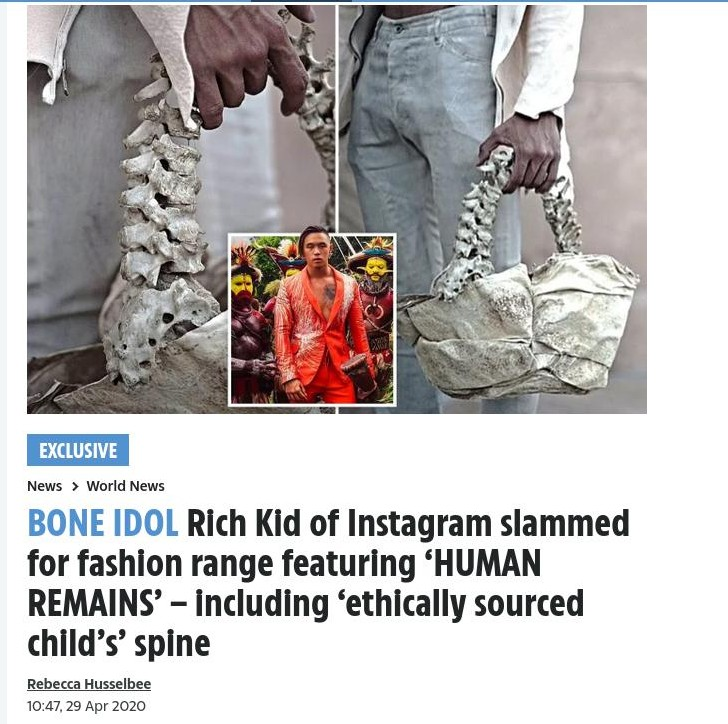

Claim: I agree with not hurting animals but vegans sound crazy
Details
"Carnism sounds normal. Veganism sounds crazy"
What carnists actually sound like
I want you to recall the articles that came out surrounding this guy:

Now I just want you to imagine all the typical carnist responses applied here, like:
- Our orphans are treated humanely right up until the moment they are... sourced for materials. They are completely free-range orphans and were fed the finest foods with no antibiotics or hormones
- People have been killing people (and specifically children) for thousands of years.
- Lions eat their young, why can't I? It's all just the circle of life, man
- Me not killing a child isn't going to make a dent in all the killings worldwide
- These children have a better life up until their sourcing day than they ever would have had in the wild
- If children aren't meant to be sourced for their spines why is their back made of one?
- Children don't understand morality. They would do the same to you given the chance. So it's perfectly fine to do to them
- It's fine because the other parts of the orphan are used, so nothing is wasted.
- Look, I'm not paying for orphans to be killed. I'm just paying for a handbag and orphan sourcing is just an unfortunate side effect
- Children are less intelligent than me and therefore it's ok to kill them so long as they are treated humanely
- Children are often exploited in the labor made for other handbags anyways, so it's not like you're not contributing to child abuse by buying another handbag. And not everyone can afford a handbag not made in Bangladesh or whatever, so if you are against child abuse you're against ALL handbags and therefore saying that only the rich should be allowed to own one. That is classist and therefore racist. Being against his handbag is really racist Nazi ideology at its core.
- The orphan is already dead when the spine is harvested so why does it matter?
- Look, don't be mad at the person making the handbag, be just generally mad at the whole handbag industry. There's nothing that an individual can do to make a dent anyways
- I've tried giving up child-spine handbags but this one was a gift so I can't not accept it!
- You people against child-spine handbags are part of some kind of religious cult. It's so extreme to be against ALL child spines. I'm kind of doing orphan-spine-free-handbag mondays (OSFHM) and seeing how things go from there (just handbags for OSFHM - I can't give up ALL child spines LOL. That's an extreme position, and I'm a moderate in everything)
- Look, why are you buying handbags other than orphan-spine handbags when it looks and works just like the orphan-spine ones? Isn't that hypocritical?
- I don't appreciate the judgement you're giving this guy for making an orphan-spine handbag you hypocrit, strutting around like you're making some kind of change. You're not changing anything!
- Why is it even called an "orphan-spine-free" handbag? Shouldn't you pick some other name that designates it as being free of orphan spines? Make a different sound with your mouth.
- Is every product you have ever used free of child labor? No? Oh so you're just paying lipservice to being against child and orphan abuse. There's no point in being against this handbag on any moral grounds.
- There's no ethical consumption under capitalism anyways so why does it matter where you source the materials for the place where you put your true evil: your wallet.
- You orphan-spine-free-handbag users just want to feel morally superior by using inferior handbags
- Being against orphan-spine handbags is really just a position on handbags, not some moral position
- I don't care what you think about the orphan-spine handbag. And if you think you have a reason why I should care, I don't care about that reason either.
- God personally told me that it's moral specifically to have orphan-spine handbags
- Look, I'm keeping the economy alive by keeping the handbag market running. The luxury goods market keeps tax revenue flowing and therefore being against orphan-spine handbags means you're actively undermining society
- If we don't make spine handbags out of orphans we'll be overrun by them
- Harvesting spines is how orphanages stay afloat. It's justifiable to make handbags out of spines if it helps support other orphans
- Orphan-spine-free handbags are just inferior. Where does your handbag get its support from? Where?
- Why do they call other handbags spineless? Because you are your handbag! Hardy har har.
- So if you replace the spine in your handbag are you just going to use a handbag with no strap at all? Isn't that just a wallet. I am incredulous as to how you can accomplish this.
- It's a personal choice, I don't think you should push your orphan-treating ethics on me
- You aren't going to make the orphan handbag market disappear overnight. So what are you even fighting against?
- This handbag is locally sourced. Are you against all local sourcing? Are you against all local businesses?!
- I'm really looking for some kind of common ground. Maybe like if you start by like being against really aggregious cases of child abuse and then move gradually? Baby steps.
- Handbags in general consume a lot of resources and have low returns, so it's like not really a big change.
- What else are you going to use orphan spines for? They are way too limited in use and so if you're trying to use other materials as a substitute for human spines then you're using up MORE resources not LESS. That means spine-free handbags are LESS sustainable.
- Look, this pamphlet says that child spines are sustainable. Does your alternate idea of what a handbag should looks like have sustainability initiatives? I didn't think so.
- Orphans wouldn't be able to make it in society if we just let them go, so like it's a moot point.
- Are you really wanting handbag designers to lose their jobs? What happens with all the families of these handbag designers if you ban child-spine handbags overnight? You want their children to starve? You're really ANTI-child if you're against orphan-spine handbags.
- You're restricting access to handbags. Some people in third-world countries have limited access to what they can use for a handbag. Are you really trying to damage third-world countries.
- You're promoting globalism by restricting access to handbags for people and therefore really for stepping on the heads of indigenous people who suffer those ultimate consequences.
- Anyone questioning the structural integrity of the spine as a strap is really a shill for big polyethylene.
- It's in my culture to make handbags out of spines; so be sensitive.
- I just like spine handbags. I don't really have any defense. Are people against spine handbags better than me? Probably. But that's not going to stop me.
- So what now no one can own any human remains? Are you against people owning urns too?
- I'm more connected to these orphans than any opposer of these handbags, because I'm the one directly sourcing their organs. You're just some keyboard warrior with no sense of reality.
- We don't make enough handbags for everyone worldwide so can't afford to waste any, not even ones that are made out of materials you think aren't sourced ethically. So even if you're right on the ethics you're still wrong.
- Some people have all their savings in handbags. Are you trying to wipe out their savings too?
- Morality is all subjective, and my morality says that handbags made from orphan spines is axiomatically ethical. You claim your morality is better. I claim mine is better. At best, we're at an impasse. I just don't see how you can advance your anti-spine-handbag case beyond that point.
- This is why lab-grown spines need to become a thing yesterday! I can't wait for my orphan spines to be grown in a lab. Until then, the fact that an orphan is required is just an unfortunate reality.
Also... 51. I have these and a ton more defenses and gymnastics to justify this. One of them is probably right, just by the law of large numbers. So even if you do a good job at countering most of these arguments I still won't believe you.
Carnism actually sounds objectively crazy.
Sources
[Claim: I agree with not hurting animals but vegans sound crazy](http://www.carnist.cc/crazy)